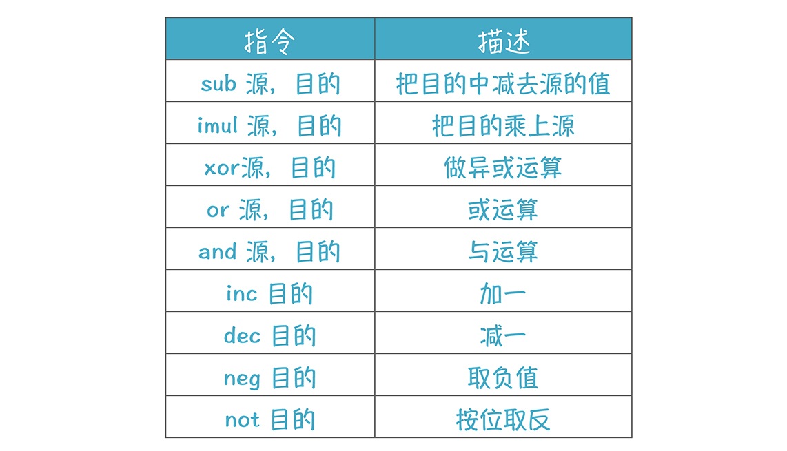
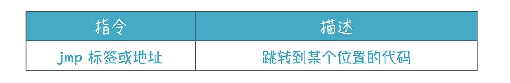

- 00 开篇词 为什么你要学习编译原理？.md.html
- 01 理解代码：编译器的前端技术.md.html
- 02 正则文法和有限自动机：纯手工打造词法分析器.md.html
- 03 语法分析（一）：纯手工打造公式计算器.md.html
- 04 语法分析（二）：解决二元表达式中的难点.md.html
- 05 语法分析（三）：实现一门简单的脚本语言.md.html
- 06 编译器前端工具（一）：用Antlr生成词法、语法分析器.md.html
- 07 编译器前端工具（二）：用Antlr重构脚本语言.md.html
- 08 作用域和生存期：实现块作用域和函数.md.html
- 09 面向对象：实现数据和方法的封装.md.html
- 10 闭包： 理解了原理，它就不反直觉了.md.html
- 11 语义分析（上）：如何建立一个完善的类型系统？.md.html
- 12 语义分析（下）：如何做上下文相关情况的处理？.md.html
- 13 继承和多态：面向对象运行期的动态特性.md.html
- 14 前端技术应用（一）：如何透明地支持数据库分库分表？.md.html
- 15 前端技术应用（二）：如何设计一个报表工具？.md.html
- 16 NFA和DFA：如何自己实现一个正则表达式工具？.md.html
- 17 First和Follow集合：用LL算法推演一个实例.md.html
- 18 移进和规约：用LR算法推演一个实例.md.html
- 19 案例总结与热点问题答疑：对于左递归的语法，为什么我的推导不是左递归的？.md.html
- 20 高效运行：编译器的后端技术.md.html
- 21 运行时机制：突破现象看本质，透过语法看运行时.md.html
- 22 生成汇编代码（一）：汇编语言其实不难学.md.html
- 23 生成汇编代码（二）：把脚本编译成可执行文件.md.html
- 24 中间代码：兼容不同的语言和硬件.md.html
- 25 后端技术的重用：LLVM不仅仅让你高效.md.html
- 26 生成IR：实现静态编译的语言.md.html
- 27 代码优化：为什么你的代码比他的更高效？.md.html
- 28 数据流分析：你写的程序，它更懂.md.html
- 29 目标代码的生成和优化（一）：如何适应各种硬件架构？.md.html
- 30 目标代码的生成和优化（二）：如何适应各种硬件架构？.md.html
- 31 内存计算：对海量数据做计算，到底可以有多快？.md.html
- 32 字节码生成：为什么Spring技术很强大？.md.html
- 33 垃圾收集：能否不停下整个世界？.md.html
- 34 运行时优化：即时编译的原理和作用.md.html
- 35 案例总结与热点问题答疑：后端部分真的比前端部分难吗？.md.html
- 36 当前技术的发展趋势以及其对编译技术的影响.md.html
- 37 云编程：云计算会如何改变编程模式？.md.html
- 38 元编程：一边写程序，一边写语言.md.html
- 加餐 汇编代码编程与栈帧管理.md.html
- 用户故事 因为热爱，所以坚持.md.html
- 第二季回归 这次，我们一起实战解析真实世界的编译器.md.html
- 结束语 用程序语言，推动这个世界的演化.md.html
- 捐赠
22 生成汇编代码（一）：汇编语言其实不难学
敲黑板：课程用的是GNU汇编器，macOS和Linux已内置，本文的汇编语言的写法是GNU汇编器规定的写法。Windows系统可安装MinGW或Linux虚拟机。
对于静态编译型语言，比如C语言和Go语言，编译器后端的任务就是生成汇编代码，然后再由汇编器生成机器码，生成的文件叫目标文件，最后再使用链接器就能生成可执行文件或库文件了。

就算像JavaScript这样的解释执行的语言，也要在运行时利用类似的机制生成机器码，以便调高执行的速度。Java的字节码，在运行时通常也会通过JIT机制编译成机器码。而汇编语言是完成这些工作的基础。
对你来说，掌握汇编语言是十分有益的，因为哪怕掌握一小点儿汇编技能，就能应用到某项工作中，比如，在C语言里嵌入汇编，实现某个特殊功能；或者读懂某些底层类库或驱动程序的代码，因为它可能是用汇编写的。
本节课，我先带你了解一下汇编语言，来个破冰之旅。然后在接下来的课程中再带你基于AST手工生成汇编代码，破除你对汇编代码的恐惧，了解编译期后端生成汇编代码的原理。
以后，当你看到高级语言的代码，以及IR时，就可以想象出来它对应的汇编代码是什么样子，实现从上层到底层认知的贯通。
了解汇编语言
机器语言都是0101的二进制的数据，不适合我们阅读。而汇编语言，简单来说，是可读性更好的机器语言，基本上每条指令都可以直接翻译成一条机器码。
跟你日常使用的高级语言相比，汇编语言的语法特别简单，但它要跟硬件（CPU和内存）打交道，我们来体会一下。
计算机的处理器有很多不同的架构，比如x86-64、ARM、Power等，每种处理器的指令集都不相同，那也就意味着汇编语言不同。我们目前用的电脑，CPU一般是x86-64架构，是64位机。（如不做特别说明，本课程都是以x86-64架构作为例子的）。
说了半天，汇编代码长什么样子呢？我用C语言写的例子来生成一下汇编代码。
#include <stdio.h>
int main(int argc, char* argv[]){
printf("Hello %s!\n", "Richard");
return 0;
}
在macOS中输入下面的命令，其中的-S参数就是告诉编译器把源代码编译成汇编代码，而-O2参数告诉编译器进行2级优化，这样生成的汇编代码会短一些：
clang -S -O2 hello.c -o hello.s
或者：
gcc -S -O2 hello.c -o hello.s
生成的汇编代码是下面的样子：
.section __TEXT,__text,regular,pure_instructions
.build_version macos, 10, 14 sdk_version 10, 14
.globl _main ## -- Begin function main
.p2align 4, 0x90
_main: ## @main
.cfi_startproc
## %bb.0:
pushq %rbp
.cfi_def_cfa_offset 16
.cfi_offset %rbp, -16
movq %rsp, %rbp
.cfi_def_cfa_register %rbp
leaq L_.str(%rip), %rdi
leaq L_.str.1(%rip), %rsi
xorl %eax, %eax
callq _printf
xorl %eax, %eax
popq %rbp
retq
.cfi_endproc
## -- End function
.section __TEXT,__cstring,cstring_literals
L_.str: ## @.str
.asciz "Hello %s!\n"
L_.str.1: ## @.str.1
.asciz "Richard"
.subsections_via_symbols
你如果再打下面的命令，就会把这段汇编代码编译成可执行文件（在macOS或Linux执行as命令，就是调用了GNU的汇编器）：
as hello.s -o hello.o //用汇编器编译成目标文件
gcc hello.o -o hello //链接成可执行文件
./hello //运行程序
以上面的代码为例，来看一下汇编语言的组成元素。这是汇编语言入门的基础，也是重点内容，在阅读时，你不需要死记硬背，而是要灵活掌握，比如CPU的指令特别多，我们记住常用的就行了，不太常用的可以去查手册。
1.汇编语言的组成元素
这段代码里有指令、伪指令、标签和注释四种元素，每个元素单独占一行。
指令（instruction）是直接由CPU进行处理的命令，例如：
pushq %rbp
movq %rsp, %rbp
其中，开头的一个单词是助记符（mnemonic），后面跟着的是操作数（operand），有多个操作数时以逗号分隔。第二行代码的意思是把数据从这里（源）拷贝到那里（目的），这跟“请倒杯咖啡给我”这样的自然语句是一样的，先是动词（倒），然后是动词的作用对象（咖啡），再就是目的地（给我）。
伪指令以“.”开头，末尾没有冒号“：”。
.section __TEXT,__text,regular,pure_instructions
.globl _main
.asciz "Hello %s!\n"
伪指令是是辅助性的，汇编器在生成目标文件时会用到这些信息，但伪指令不是真正的CPU指令，就是写给汇编器的。每种汇编器的伪指令也不同，要查阅相应的手册。
标签以冒号“:”结尾，用于对伪指令生成的数据或指令做标记。例如L_.str: 标签是对一个字符串做了标记。其他代码可以访问标签，例如跳转到这个标签所标记的指令。
L_.str: ## @.str
.asciz "Hello %s!\n"
标签很有用，它可以代表一段代码或者常量的地址（也就是在代码区或静态数据区中的位置）。可一开始，我们没法知道这个地址的具体值，必须生成目标文件后，才能算出来。所以，标签会简化汇编代码的编写。
第四种元素，注释，以“#”号开头，这跟C语言中以//表示注释语句是一样的。
因为指令是汇编代码的主要部分，所以我们再把与指令有关的知识点展开讲解一下。
2.详细了解指令这个元素
在代码中，助记符“movq”“xorl”中的“mov”和“xor”是指令，而“q”和“l”叫做后缀，表示操作数的位数。后缀一共有b, w, l, q四种，分别代表8位、16位、32位和64位。
比如，movq中的q代表操作数是8个字节，也就是64位的。movq就是把8字节从一个地方拷贝到另一个地方，而movl则是拷贝4个字节。
而在指令中使用操作数，可以使用四种格式，它们分别是：立即数、寄存器、直接内存访问和间接内存访问。
立即数以$开头， 比如$40。（下面这行代码是把40这个数字拷贝到%eax寄存器）。
movl $40, %eax
除此之外，我们在指令中最常见到的就是对寄存器的访问，GNU的汇编器规定寄存器一定要以%开头。
直接内存访问：当我们在代码中看到操作数是一个数字时，它其实指的是内存地址。不要误以为它是一个数字，因为数字立即数必须以$开头。另外，汇编代码里的标签，也会被翻译成直接内存访问的地址。比如“callq _printf”中的“_printf”是一个函数入口的地址。汇编器帮我们计算出程序装载在内存时，每个字面量和过程的地址。
间接内存访问：带有括号，比如（%rbp），它是指%rbp寄存器的值所指向的地址。
间接内存访问的完整形式是：
偏移量（基址，索引值，字节数）这样的格式。
其地址是：
基址 + 索引值*字节数 + 偏移量
举例来说：
8(%rbp)，是比%rbp寄存器的值加8。- -8(%rbp)，是比%rbp寄存器的值减8。- （%rbp, %eax, 4）的值，等于%rbp + %eax*4。这个地址格式相当于访问C语言中的数组中的元素，数组元素是32位的整数，其索引值是%eax，而数组的起始位置是%rbp。其中字节数只能取1,2,4,8四个值。
你现在应该对指令的格式有所了解了，接下来，我们再学几个常用的指令：
mov指令
mov 寄存器|内存|立即数, 寄存器|内存
这个指令最常用到，用于在寄存器或内存之间传递数据，或者把立即数加载到内存或寄存器。mov指令的第一个参数是源，可以是寄存器、内存或立即数。第二个参数是目的地，可以是寄存器或内存。
lea指令，lea是“load effective address”的意思，装载有效地址。
lea 源，目的
比如前面例子代码中的leaq指令，是把字符串的地址加载到%rdi寄存器。
leaq L_.str(%rip), %rdi
add指令是做加法运算，它可以采取下面的格式：
add 立即数， 寄存器
add 寄存器， 寄存器
add 内存， 寄存器
add 立即数， 内存
add 寄存器， 内存
比如，典型的c=a+b这样一个算术运算可能是这样的：
movl -4(%rbp), %eax #把%rbp-4的值拷贝到%eax
addl -8(%rbp), %eax #把%rbp-8地址的值加到%eax上
movl %eax, -12(%rbp) #把%eax的值写到内存地址%rbp-12
这三行代码，分别是操作a、b、c三个变量的地址。它们的地址分别比%rbp的值减4、减8、减12，因此a、b、c三个变量每个都是4个字节长，也就是32位，它们是紧挨着存放的，并且是从高地址向低地址延伸的，这是栈的特征。
除了add以外，其他算术运算的指令：

与栈有关的操作：
跳转类：

过程调用：
比较操作：
以上我列举的指令，是你在编写汇编代码时，经常会用到的，比较重要，会满足你编写简单汇编程序的需求，所以你需要重点关注。
x86-64是复杂指令集的处理器，有非常多的指令，差不多有上千条，全部记住是比较难的。更好的办法，是记住主要的指令，其他指令在使用时去查Intel公司的手册，在这里我就不举例了。
x86-64架构的寄存器
在汇编代码中，我们经常要使用各种以%开头的寄存器的符号。初学者阅读这些代码时，通常会有一些疑问：有几个寄存器可以用？我可以随便用它们吗？使用不当会不会造成错误？等等。所以，有必要让你熟悉一下这些寄存器，了解它们的使用方法。
x86-64架构的CPU里有很多寄存器，我们在代码里最常用的是16个64位的通用寄存器，分别是：
%rax，%rbx，%rcx，%rdx，%rsi，%rdi，%rbp，%rsp， %r8，%r9，%r10，%r11，%r12，%r13，%r14，%r15。
这些寄存器在历史上有各自的用途，比如，rax中的“a”，是Accumulator(累加器)的意思，这个寄存器是累加寄存器。
但随着技术的发展，这些寄存器基本上都成为了通用的寄存器，不限于某种特定的用途。但是，为了方便软件的编写，我们还是做了一些约定，给这些寄存器划分了用途。针对x86-64架构有多个调用约定（Calling Convention），包括微软的x64调用约定（Windows系统）、System V AMD64 ABI（Unix和Linux系统）等，下面的内容属于后者：
%rax 除了其他用途外，通常在函数返回的时候，把返回值放在这里。
%rsp 作为栈指针寄存器，指向栈顶。
%rdi，%rsi，%rdx，%rcx，%r8，%r9 给函数传整型参数，依次对应第1参数到第6参数。超过6个参数怎么办？放在栈桢里，我们21讲已经讲过了。
如果程序要使用%rbx，%rbp，%r12，%r13，%r14，%r15 这几个寄存器，是由被调用者（Callee）负责保护的，也就是写到栈里，在返回的时候要恢复这些寄存器中原来的内容。其他寄存器的内容，则是由调用者（Caller）负责保护，如果不想这些寄存器中的内容被破坏，那么要自己保护起来。
上面这些寄存器的名字都是64位的名字，对于每个寄存器，我们还可以只使用它的一部分，并且另起一个名字。比如对于%rax，如果使用它的前32位，就叫做%eax，前16位叫%ax，前8位（0到7位）叫%al，8到15位叫%ah。
其他的寄存器也有这样的使用方式，当你在汇编代码中看到这些名称的时候，你就知道其实它们有可能在物理上是同一个寄存器。

除了通用寄存器以外，有可能的话，还要了解下面的寄存器和它们的用途，我们写汇编代码时也经常跟它们发生关联：
8个80位的x87寄存器，用于做浮点计算；
8个64位的MMX寄存器，用于MMX指令（即多媒体指令），这8个跟x87寄存器在物理上是相同的寄存器。在传递浮点数参数的时候，要用mmx寄存器。
16个128位的SSE寄存器，用于SSE指令。我们将在应用篇里使用SSE指令，讲解SIMD的概念。
指令寄存器，rip，保存指令地址。CPU总是根据这个寄存器来读取指令。
flags（64位：rflags, 32位：eflags）寄存器：每个位用来标识一个状态。比如，它们会用于比较和跳转的指令，比如if语句翻译成的汇编代码，就会用它们来保存if条件的计算结果。
总的来说，我们的汇编代码处处要跟寄存器打交道，正确和高效使用寄存器，是编译期后端的重要任务之一。
课程小结
本节课，我讲解了汇编语言的一些基础知识，由于汇编语言的特点，涉及的知识点和细节比较多，在这个过程中，你无需死记硬背，只需要掌握几个重点内容：
1.汇编语言是由指令、标签、伪指令和注释构成的。其中主要内容都是指令。指令包含一个该指令的助记符和操作数。操作数可以使用直接数、寄存器，以及用两种方式访问内存地址。
2.汇编指令中会用到一些通用寄存器。这些寄存器除了用于计算以外，还可以根据调用约定帮助传递参数和返回值。使用寄存器时，要区分由调用者还是被调用者负责保护寄存器中原来的内容。
另外，我们还要注意按照一定的规则维护和使用栈桢，这个知识点会在后面的加餐中展开来讲一个例子。
鉴于你可能是第一次使用汇编语言，所以我提供两个建议，让你快速上手汇编语言：
1.你可以用C语言写一些示例代码，然后用编译器生成汇编代码，看看能否看懂。
2.模仿文稿中的例子，自己改写并运行你自己的汇编程序，这个过程中，你会发现真的没那么难。
一课一思
你之前学习过或者在项目中使用过汇编语言吗？感受是什么呢？有什么经验和体会呢？欢迎在留言区分享你的经验与感受。
最后，感谢你的阅读，如果这篇文章让你有所收获，也欢迎你将它分享给更多的朋友。
© 2019 - 2023 Liangliang Lee. Powered by gin and hexo-theme-book.